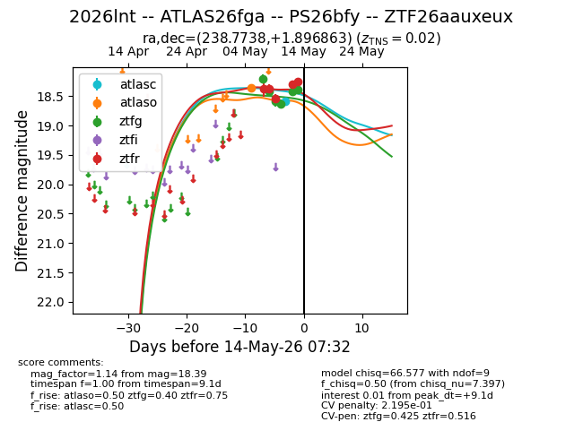
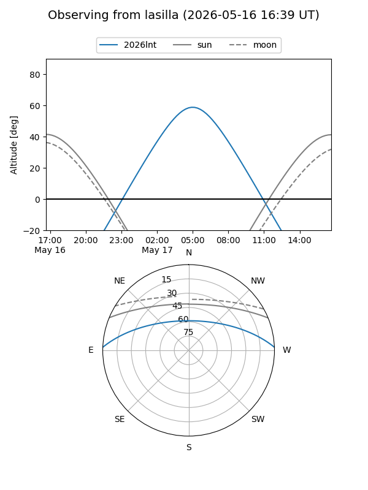
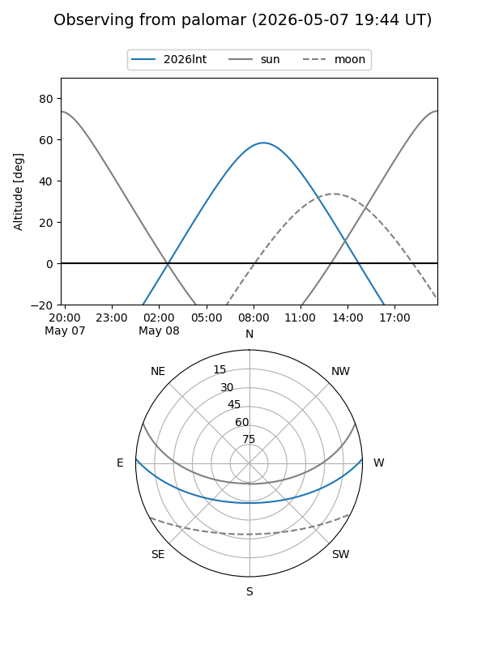
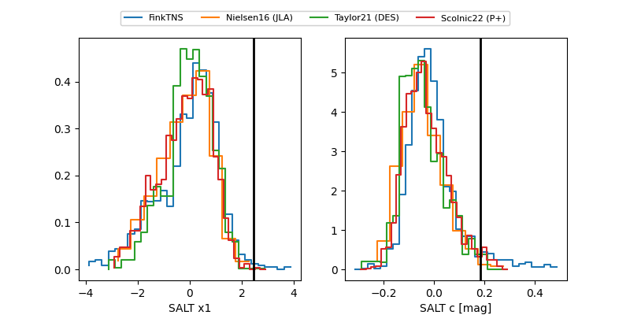

2026lnt
Target 2026lnt at 2026-05-14 07:33
Aliases and brokers:
FINK: link
Lasair: link
ALeRCE: link
TNS: link
YSE: link
alt names
ZTF26aauxeux (ztf,fink_ztf)
2026lnt (tns,yse)
ATLAS26fga (atlas)
PS26bfy (panstarrs)
Coordinates:
equatorial (ra, dec) = 238.7738,+1.89686
equatorial (HMS+DMS) = 15:55:05.72,+01:53:48.71
galactic (l, b) = (11.0998,+39.34199)
Flags:
likely cv
Photometry:
last atlasc=18.58, atlaso=18.36, ztfg=18.39, ztfr=18.26
1 atlasc, 1 atlaso, 6 ztfg, 5 ztfr detections
Lightcurve

Visibility


Additional plots
